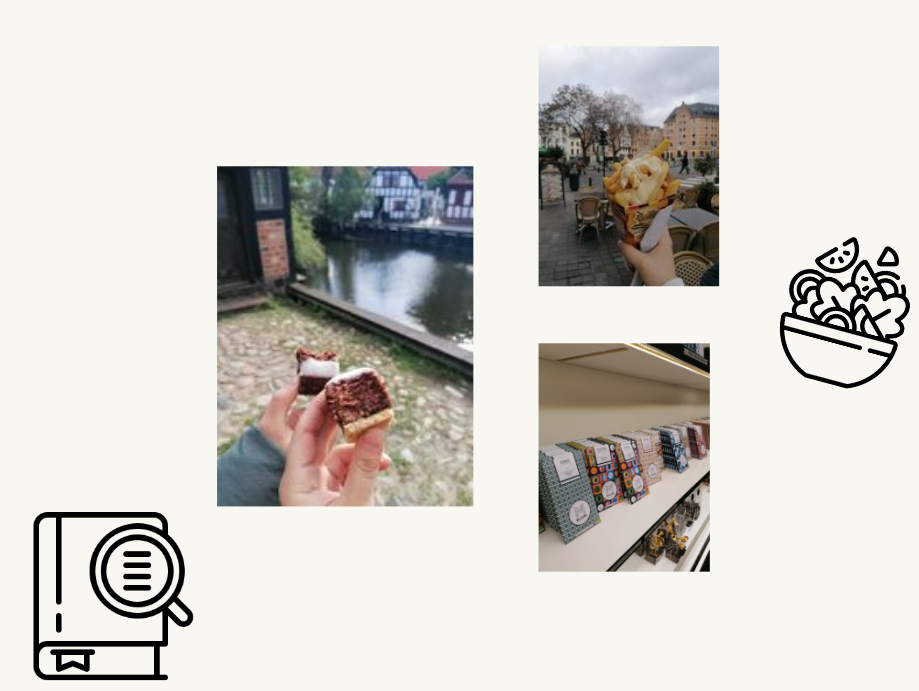
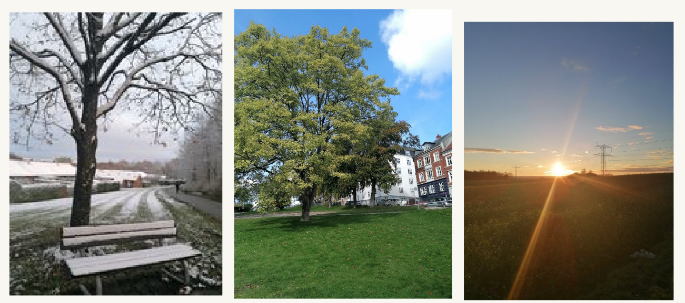
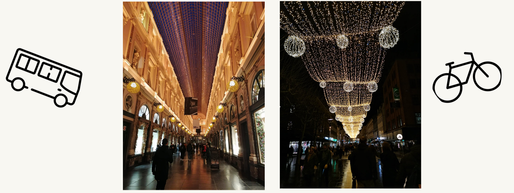

Necessary things you should before going to a foreign country:
1. Know eating mannerisms - that is a thing you will definitely do so that make sure you know how to do it respectfully. In the different countries the way you leave your plate has different meanings so be sure your hosts feel appreciated.
2. Know what is considered Respectful Clothing
3. Learn some words in the local language - especially if you are traveling to a country where the English is not that widely-spread. Some phrases might come in handy
4. Look up the Weather and Anticipate taking Action Accordingly - travel during hurricane season - know that. If a major natural disaster is imminent, it may be grounds to cancel or reschedule the trip, as safety is always a number one concern. This is also relevant for clothing.
5. Know Who to Contact in Case of Emergency
6. Check out the Reputations of Certain Parts of the City & Make Sure you’re Heading into Safe Areas - This is like any city that you are going into. Make sure you are at a place where you can maintain your own safety, and keep all the things that you brought in check.
7. Check out Laws and Punishments that may Differ from your Home Country - good way to avoid trouble and make your trip safe in one more way!
And since you are going to Aarhus here are the promised tips for Denmark!
1) The city might be bigger than you actually expect. For easy going around you can use the buses.
2) In Denmark everywhere you can pay by card - it is almost impossible to see danish cash. In order to buy ticket you should download the Middtrafik app. Also to see when is the next bus at your stop you should download the app Middtrafik Live app. Both are pretty easy to use and in English.
3) Bikes are everywhere! Be aware of that and really pay attention while walking or crossing the streets!
4) Danes are really direct. They can not be impressed by fluffy words and kind regards, they will be extremelly appreciative if you tell them directly what you want and do not waste their time.
5) People just do not make eye contact and that's it!


